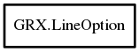

LineOption
Object Hierarchy:

Description:
[ Compact ]
public class LineOption
Custom line option structure.
Zero or one dash pattern length means the line is continuous. The dash pattern always begins with a drawn section.
Content:
Creation methods:
- public LineOption (size_t size = sizeof ( MallocStruct))
Fields:
- public Color color
Color used to draw line.
- public int width
Width of the line.
- public uchar[] dashpat
Draw/no-draw pattern.